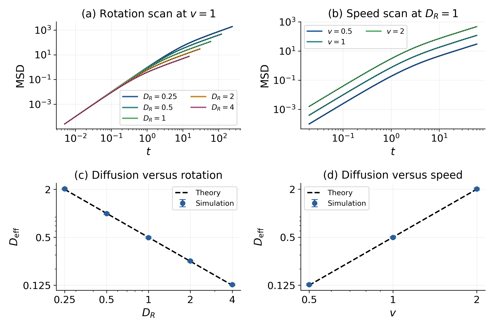
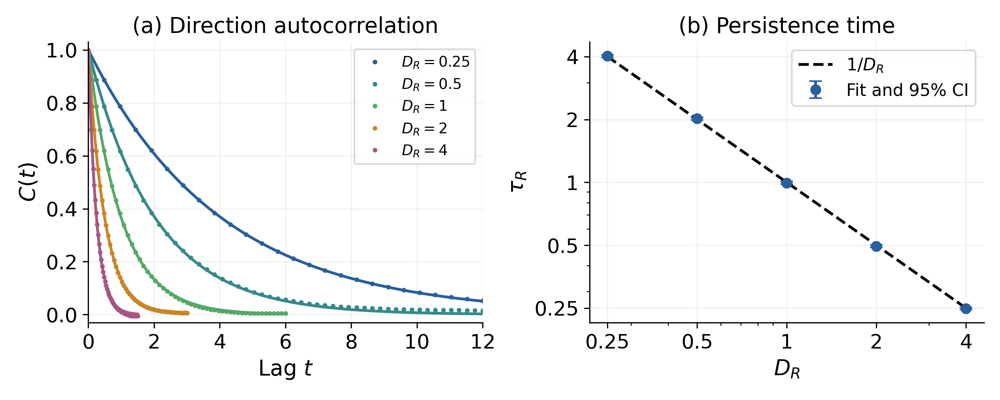

From persistent motion
to diffusion.从持续运动，
到扩散。
A constant-speed particle changes direction at random. Its collective spreading connects a simple stochastic model to measurable scaling laws.一个恒速粒子随机改变方向。通过大量轨迹的统计行为，将简单随机模型与可测量的标度关系连接起来。
How does rotational noise erase directional memory, and how do speed and rotational diffusion control long-time spreading?旋转噪声如何抹去方向记忆？速度与旋转扩散率又如何决定长时间的扩散？
An independently completed course study of two-dimensional active Brownian motion. My work covers simulation design, statistical estimates, and comparison with theory.由我独立完成的二维主动布朗运动课程研究，涵盖模拟设计、统计估计和理论对照。
View source on GitHub ↗查看 GitHub 源码 ↗Simulation meets the expected scaling模拟与理论标度的对照
The model has constant propulsion speed and rotational noise, with no added translational noise, force, or particle interactions. The saved runs recover C(t) = exp(−DRt), persistence time τR = 1/DR, and effective diffusion Deff = v²/(2DR).模型具有恒定推进速度和旋转噪声，不包含额外平移噪声、外力或粒子相互作用。已有运行结果对应 C(t) = exp(−DRt)、持续时间 τR = 1/DR，以及有效扩散系数 Deff = v²/(2DR)。
Largest persistence-time deviation from theory持续时间相对理论的最大偏差
Largest diffusion-coefficient deviation from theory扩散系数相对理论的最大偏差
Trajectories per MSD parameter set每组 MSD 参数的轨迹数

Open full-size figure ↗查看原尺寸图表 ↗
How long is direction remembered?方向记忆能持续多久？

Open full-size figure ↗查看原尺寸图表 ↗
Three checks on the numerical result对数值结果的三类检查
Independent records and batches独立记录与批次
Zero-padded FFT computes non-circular correlation. Uncertainty comes from independent records or trajectory batches, not correlated time samples.零填充 FFT 计算非循环自相关。不确定性来自独立记录或轨迹批次，而不是把相关时间点当作独立样本。
Sample size and fit windows样本量与拟合窗口
The experiment compares sample sizes and alternative long-time fitting windows to check the stability of estimated diffusion.实验比较不同样本量与长时间拟合窗口，检查扩散系数估计的稳定性。
Shared-noise step refinement共享噪声的步长比较
Nested time grids share Brownian increments. The recorded h = 0.02 versus 0.01 comparison changes the estimate by 0.01215% of theory.嵌套时间网格共用布朗增量。已有 h = 0.02 与 0.01 的配对比较，估计差异为理论值的 0.01215%。
What was checked here本次核查了什么
- Twelve saved numerical archives were read without running simulation code.未运行模拟代码，只读检查了 12 个已有数值档案。
- Saved means, standard errors, and relevant bootstrap and batch summaries agree with their underlying arrays.保存的均值、标准误，以及相关 bootstrap 和批次汇总与底层数组一致。
- The two displayed figures were inspected and copied without changing their plotted data.实际检查了两张展示图，复制时未改变图中的数据。
Scope and limits范围与局限
- This is a numerical study of a classical model, not a new physical discovery.这是经典模型的数值研究，不是新的物理发现。
- Reported intervals describe Monte Carlo uncertainty. The step comparison is a separate, limited check on integration error.报告区间描述 Monte Carlo 不确定性；步长比较是对积分误差的另一项有限检查。
- Existing data consistency was checked; no trajectories were regenerated for this site.本次核查已有数据的一致性，没有为网站重新生成轨迹。